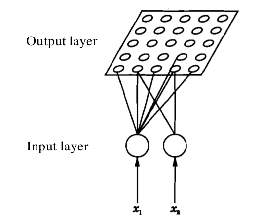
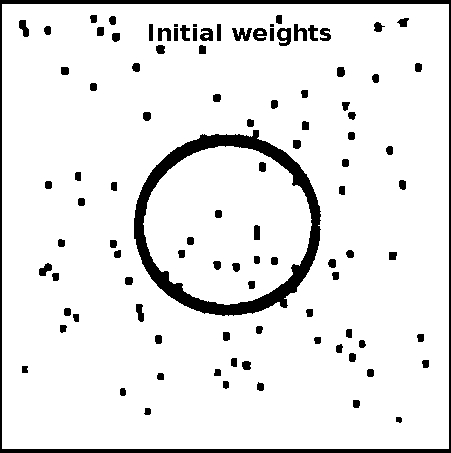
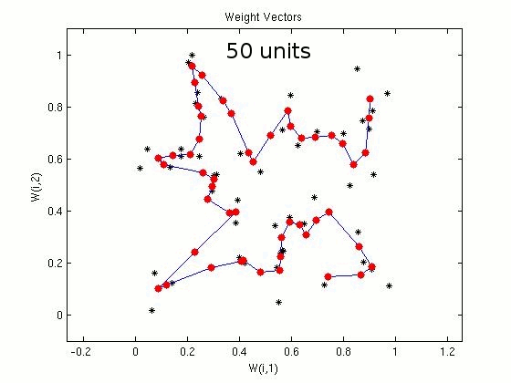

Solution of optimization problems
Description of self-organizing feature map
Self-organizing map (SOM) was proposed by T. Kohonen [Kohonen, 1982a], and it provides a way of visualizing data. In particular, high dimensional data can be reduced to lower dimensions using SOM. The map also helps in grouping similar data together. Thus the map helps in visualizing the concept of clustering by grouping data with similar characteristics. A SOM attempts to cluster the training data by detecting similarity between data points/ feature vectors. The map does not require external supervision, and hence represents an unsupervised way of learning.
Architecture of SOM
In a self-organizing map, the input is represented by an (M)-dimensional feature vector. The output layer consists of (N) units, where the units are arranged in the form of a grid. Each unit is a neuron/node. Each dimension of the input feature vector is associated with a unit/neuron in the input layer. A weight vector is associated with a unit/node/neuron in the output layer, and the dimension of this weight vector is same as that of the input feature vector. The map operates in two modes, namely, training and mapping. The process of training helps to build the map using (a large number of) input feature vectors, which are also known as training examples. The process of mapping a new input feature vector automatically identifies the region in the output whose neighbourhood units have similar properties.

Figure 1: Architecture of SOM
Algorithm for learning
The training of SOM is based on the principle of competitive learning (Refer experiment 7, Artificial Neural Networks virtual labs). A training example is a set of inputs with some given number of nodes. Initially weights in the SOM network are assigned randomly. When a training example is presented to the network, Euclidean distances between the training feature vector and all the weight vectors are computed. The neuron in the output unit for which the distance is found minumum is said to fire. Which mean that the weights of this neuron and the neurons close to it in the SOM network are adjusted towards the input vector. The magnitude of the adjustment decreases with time and with distance of other neurons from the fired neuron. A neighborhood function is defined to specify the neurons whose weight vectors are updated along with that of the fired neuron. The region of the neighborhood function is broad initially, and the region shrinks gradually with successive iterations. This process is repeated for each input vector for a number of iterations. The SOM associates the output nodes with groups or patterns in the input data set.
Let us consider an (N)-unit output layer and (M)-dimensional input feature vectors. The following sequence of steps is involved in the learning process, i.e., the process of updating the weights.
- Initialize the weights from (M) inputs to the (N) output units to small random values. Initialize the size of the neighbourhood region.
- Present a new input feature vector.
- Compute the distance between the input feature vector the weight vector associated with each neuron.
- Select the neuron k which minimizes the distance.
- Update the weight vector associated with neuron k, and also the weight vectors associated with neurons in the neighbourhood of neuron k.
- Repeat steps 2 through 5 for all inputs, several times.
Mapping using a test feature vector
During mapping again, there will be one winning neuron, the neuron whose weight vector lies closest to the input vector. This will be determined by calculating the Euclidean distance between input vector and all the weight vectors. And then the test feature vector will be said to fire the winning neuron. The updation of weights for rest of the cycles follow the same algorithm as above.
Application of SOM to travelling salesman problem
Let us consider a SOM network with 1000 neurons in the output layer, for the travelling salesman problem of 100 cities. The 2-dimensional input represents the coordinate values of a city. The units in the output layer are arranged (indexed) along a closed curve or ring. The weights vectors corresponding to adjacent units are joined in the weight space. In the following demonstration, the plots show the coordinates of the cities (marked by symbol 'x') and the weight vectors (marked by symbol 'o'). The initialization of weight vectors along the rim of a ring is known as elastic ring approach in feature mapping. Plots show the closed path after 500, 1000 and 10000 iterations, respectively. Some of the cities may not be visited, which indicates the suboptimal nature of the algorithm. For 100 cities and a SOM with 1000 neurons in the output layer

Figure 1: Kohonen's self-organization feature map for TSP for 100 cities and 1000 units in the output layer. Effect of varying the number of units in output layer of SOM
For the travelling salesman problem of 50 cities, we consider SOM networks with different number of units/nodes in the output layer. In the following demonstration, the plots show the coordinates of the cities (marked in black) and the weight vectors (marked in red). Plots show the closed path after 50, 100, 200 and 300 units in the output layer of SOM. Some of the cities may not be visited, which indicates the suboptimal nature of the algorithm. For 50 cities

Figure 2: Illustration of sub-optimal nature of the algorithm